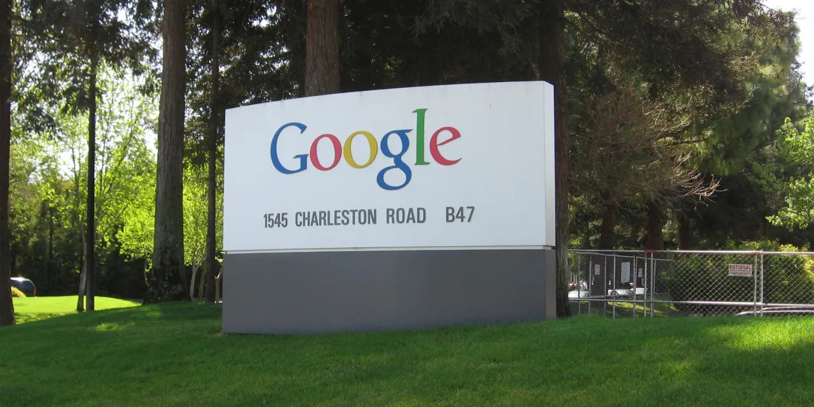

알파벳 주주가 지금 가장 궁금해할 질문은 Gemini가 ChatGPT보다 좋은지 나쁜지가 아닙니다. 더 중요한 질문은 AI 답변형 검색이 구글의 광고 현금흐름을 깎아 먹을지, 아니면 검색 광고를 더 정교하게 만들고 Google Cloud 수익성까지 키울지입니다. 알파벳은 AI 모델 회사이기 전에 검색 의도 데이터, 광고 경매, 유튜브, 안드로이드, 클라우드를 동시에 가진 플랫폼 기업입니다. 그래서 이 종목은 모델 성능표보다 돈이 남는 위치를 먼저 봐야 합니다.
Alphabet Q1 2026 실적 발표 기준 총매출은 1,098억 9,600만 달러였습니다. Google Search & other 매출은 604억 700만 달러, YouTube ads 매출은 103억 7,000만 달러, Google Cloud 매출은 200억 2,800만 달러였습니다. Google Cloud operating income은 65억 9,800만 달러였고, 회사 전체 operating income은 335억 8,500만 달러였습니다. 이 숫자는 알파벳의 핵심이 여전히 광고 현금흐름이라는 점과, 클라우드가 더 이상 단순 적자 성장 부문이 아니라는 점을 동시에 보여줍니다.
문제는 좋은 실적에도 질문이 남는다는 점입니다. AI 검색은 답을 바로 보여주기 때문에 기존 검색 클릭을 줄일 수 있습니다. 반대로 더 좋은 답변과 더 높은 의도 데이터를 통해 광고 단가를 높일 수도 있습니다. 둘 중 어느 쪽이 현실이 되는지는 발표 문구가 아니라 Search & other 매출, 광고 클릭 품질, Google Cloud 영업이익, 설비투자 회수율에서 확인해야 합니다.
검색 광고는 트래픽보다 의도 데이터가 핵심입니다

구글 검색 광고가 강한 이유는 페이지뷰가 많아서만은 아닙니다. 이용자가 무엇을 찾고 있는지, 어느 순간에 구매 의사가 있는지, 광고주가 어떤 키워드에서 성과를 내는지에 대한 데이터가 쌓여 있기 때문입니다. AI 답변형 검색이 등장하면 검색 결과 화면의 모양은 바뀔 수 있습니다. 하지만 광고주가 원하는 것은 화면 모양이 아니라 전환입니다. 그래서 구글의 방어력은 검색 트래픽보다 광고주의 투자수익률에서 결정됩니다.
알파벳이 AI 검색을 잘 운영하면 검색 광고는 줄어드는 것이 아니라 더 정밀해질 수 있습니다. 예를 들어 이용자가 단순히 제품명을 검색하는 것이 아니라 비교 조건, 예산, 지역, 사용 목적을 함께 묻는다면 광고 타깃팅은 더 좋아질 수 있습니다. 반대로 AI 답변이 너무 많은 정보를 즉시 제공해 광고 클릭을 줄이면 매출에는 부담이 됩니다. 그래서 주주는 AI 검색 발표보다 Search & other 매출 흐름을 먼저 봐야 합니다.
Q1 2026 Google Search & other 매출 604억 700만 달러는 아직 이 현금흐름이 매우 크다는 사실을 보여줍니다. 중요한 것은 다음 몇 분기 동안 이 숫자가 AI 답변형 검색 확대와 함께 유지되는지입니다. 매출이 유지되면서 AI 기능이 늘면 알파벳은 기존 광고 사업을 방어한 것입니다. 매출 성장률이 둔화되고 설비투자만 늘면 AI 전환 비용이 먼저 보이는 구간이 됩니다.
Google Cloud는 AI 비용을 회수하는 두 번째 엔진입니다
관련 영상
순이익 81% 상승, 클라우드 63% 폭증…위기론 잠재운 알파벳 역대급 실적
알파벳의 AI 투자를 볼 때 Google Cloud를 빼면 절반만 보는 것입니다. 검색과 유튜브는 AI 기능을 이용자에게 바로 배포할 수 있는 화면이고, Google Cloud는 기업 고객에게 모델과 데이터 인프라를 파는 통로입니다. Q1 2026 Google Cloud 매출 200억 2,800만 달러와 operating income 65억 9,800만 달러는 클라우드가 단순 성장 스토리를 넘어 이익 사업으로 커지고 있음을 보여줍니다.
이 지점에서 마이크로소프트와 비교가 중요합니다. 마이크로소프트는 Office, Teams, Windows, Azure 안에 Copilot을 붙여 기업 고객에게 바로 청구할 수 있습니다. 알파벳은 Workspace, Google Cloud, Gemini, Android, 검색을 동시에 갖고 있지만 기업 소프트웨어 배포면에서는 마이크로소프트보다 설득해야 할 부분이 많습니다. 대신 자체 TPU, 검색 데이터, 유튜브, 개발자 생태계는 알파벳만의 장점입니다.
투자자는 Google Cloud를 볼 때 매출 성장률만 보면 안 됩니다. AI 인프라는 서버, 반도체, 네트워킹, 전력, 냉각 비용이 큽니다. 클라우드 매출이 늘어도 operating income이 같이 늘지 않으면 AI 수요가 돈을 벌어 주는 것이 아니라 비용을 늘리는 신호가 됩니다. Q1 2026처럼 Cloud operating income이 의미 있게 커지는 흐름이 이어져야 알파벳의 AI 설비투자가 정당화됩니다.
YouTube와 Waymo는 검색 리스크를 낮추는 옵션입니다
알파벳을 검색 광고 하나로만 보면 AI 검색 리스크가 너무 커 보일 수 있습니다. 하지만 알파벳에는 YouTube와 Waymo라는 다른 축이 있습니다. YouTube ads 매출은 Q1 2026에 103억 7,000만 달러였습니다. 동영상 광고는 검색 광고와 다르게 브랜드 광고, 커넥티드TV, 크리에이터 생태계, 음악·구독과 연결됩니다. 검색 광고가 답변형 AI로 바뀌어도 유튜브 시청 시간과 광고 상품은 별도의 방어선을 제공합니다.
Waymo는 아직 검색 광고만큼 큰 돈을 벌어 주는 사업은 아닙니다. 그러나 자율주행 호출 서비스가 실제 상업 운행으로 확장될수록 알파벳의 장기 옵션 가치는 달라질 수 있습니다. 이 옵션을 너무 크게 평가하면 위험하지만, 완전히 무시해도 놓치는 것이 있습니다. 구글의 지도, 데이터, AI, 클라우드, 차량 운영 경험이 한곳에 모이는 사업이기 때문입니다.
중요한 것은 순서입니다. 주가의 현재 방어선은 Search와 YouTube, Google Cloud입니다. Waymo는 장기 옵션입니다. 따라서 알파벳을 평가할 때는 검색 광고가 먼저 버티고, 클라우드가 이익을 키우며, 유튜브가 광고 포트폴리오를 넓히고, Waymo가 옵션으로 남는 구조를 봐야 합니다. Waymo 기대만으로 알파벳을 사는 것은 순서가 바뀐 판단입니다.
메타와 아마존을 같이 보면 광고의 질이 보입니다
광고 시장에서 알파벳의 가장 중요한 비교 대상은 메타와 아마존입니다. 메타는 Facebook, Instagram, WhatsApp, Threads 안에서 추천 알고리즘과 광고 제작 자동화를 바로 붙일 수 있습니다. AI 투자 회수 경로가 광고 전환율 개선으로 매우 직접적입니다. 반면 알파벳은 검색 의도 데이터가 강합니다. 이용자가 무엇을 찾는지 이미 말하고 들어오기 때문에, 광고주 입장에서는 구매 의도와 가까운 접점을 살 수 있습니다.
아마존은 또 다릅니다. 아마존 광고는 구매 직전 데이터에 가깝습니다. 이용자가 이미 상품을 찾고 있고 결제 계정도 연결되어 있습니다. 그래서 알파벳의 검색 광고가 강하더라도, 전자상거래 광고 예산 일부는 아마존으로 계속 이동할 수 있습니다. 알파벳 주주는 Google Search만 보지 말고 Meta의 광고 단가와 Amazon 광고 성장도 함께 봐야 합니다.
이 비교에서 알파벳의 장점은 광고와 클라우드, 동영상, 모바일 운영체제, AI 모델을 모두 갖고 있다는 점입니다. 약점은 그만큼 규제와 비용도 크다는 점입니다. 반독점 소송, 검색 기본값 계약, 앱스토어 수수료, 개인정보 규제, AI 저작권 논란은 모두 알파벳의 할인 요인입니다. 좋은 사업이지만 규제 리스크가 낮은 회사는 아닙니다.
앞으로 확인할 숫자는 다섯 가지입니다
첫째는 Google Search & other 매출입니다. AI 검색이 확대되어도 이 매출이 유지되는지 봐야 합니다. 둘째는 YouTube ads 매출입니다. 유튜브는 검색 리스크를 낮추는 별도 광고 축입니다. 셋째는 Google Cloud operating income입니다. AI 클라우드가 매출뿐 아니라 이익으로 남는지 확인하는 숫자입니다. 넷째는 설비투자와 잉여현금흐름입니다. AI 모델과 데이터센터 투자가 너무 빨리 늘면 순이익이 좋아도 현금흐름 부담이 커질 수 있습니다. 다섯째는 규제입니다. 검색과 앱 생태계의 구조가 바뀌면 밸류에이션 기준도 바뀝니다.
알파벳의 긍정 시나리오는 분명합니다. 검색 광고가 AI 답변형 검색으로도 유지되고, Google Cloud가 높은 영업이익을 이어 가며, YouTube와 Waymo가 장기 옵션으로 재평가되는 경우입니다. 이 경우 알파벳은 AI가 기존 사업을 잠식한 회사가 아니라, 기존 현금흐름을 AI로 다시 넓힌 회사가 됩니다.
반대로 부정 시나리오는 검색 광고 둔화와 AI 비용 증가가 동시에 나오는 경우입니다. AI 답변이 클릭을 줄이고, 클라우드 마진이 데이터센터 비용에 눌리고, 규제 리스크까지 커지면 좋은 회사라도 주가 부담은 커질 수 있습니다. 그래서 알파벳은 Gemini 성능표보다 숫자로 봐야 합니다. 주주에게 가장 중요한 것은 AI 검색이 멋진지보다 검색 광고 현금흐름과 클라우드 마진이 AI 설비투자를 얼마나 빨리 회수하는지입니다.